🐱: 밥 줘 / 😯: 네…? / 🐱: 밥 주라고

2019년 9월 3일,첫만남. 뼈밖에 없는 링링 ㅜㅜ
2019년 9월 3일 저녁, 평상시와 다름없이 안성 시내에 볼일을 보러 나갔다가 집으로 돌아오던 길, 웬 검은 덩어리가 튀어나와 바로 앞에 안착했다.
뭐지..? 쓰레기 봉투인가..? 하고 봤는데 글쎄 처음 보는 고양이가 발치에서 배를 뒤집고 앞뒤좌우양옆으로 구르면서 애교를 부리는거다. 그러더니 무릎 위로 올라와선 골골거리는데, 정신을 차렸을 땐 이미 내가 가진 모든 현금을 고양이에게 바친 뒤였다.
닭가슴살을 맛있게 먹는 고양이를 보면서 흐뭇해하고 있는데, 바로 뒤에서 낯선 목소리가 들렸다.
“ 얘 누구 데려가 키울만한 사람 없을까요~?”
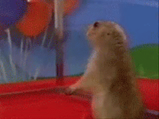예..? 혹시 절 아세요...?
아주머니는 아주 익숙하다는 듯 플라스틱 통을 꺼내 사료를 챙겨주셨다.
“아니, 그냥 밥 챙겨주고 그러는데 워낙 사람을 잘 따르고 순하니까, 가끔 취객들이 애한테 해코지하고 그래서요. 학생 아는 사람 중에 누구 키울만한 사람 없어요?”
아하 내 친구가 아니라 고양이 친구였구나^^ 아 그럼 제가 학교 페이스북 이런데다 애기 사진 몇장 올려볼게요, 어색하게 형식적인 대화를 나누는 사이 고양이는 날 쳐다보지도 않고 사료에 코를 박고 있었다. 매정한녀석….
사람을 워낙 좋아하고 해코지까지 당했다는게 신경쓰였지만, 그래도 밥도 얻어먹을 줄 알고, 사회생활 잘하는 애라 잘 살겠다 싶어서 별 걱정 없이 다시 집으로 향했다. 잘 살겠거니… 오며가며 가끔 츄르나 쥐어줘야지. 과제도 많고 하루 벌어 하루 먹고 사는 처지에 고양이는 무슨. 나는 아주 차갑고 냉철한 심장을 가진 이성적인 인간이었다.
태풍 링링이 한반도를 때리기 전까진....
볼라벤 이후 가장 강력한 태풍
링링의 한반도 불시착

아니 이정도면 허리케인 아니냐고요
고양이와 안면을 트고 일주일이 지나 세번 정도 밥을 챙겨줬을 때 즈음, 태풍 볼라벤의 뒤를 잇는 최악의 태풍이 곧 한반도를 강타할거란 보도가 연일 이어졌다.
평소라면 음 그래 그렇군ㅎ 어차피 밖에 안나가는데 뭐ㅎ 했겠지만 자꾸 이름 모를 까만 고양이가 눈에 맴돌았다. 걔 엄청 깡말랐던데…. 낡아빠진 컨테이너랑 썩은 나무 옆에서 사는 길냥이가그냥 내버려둬도 살아남을 수 있을까? 아무리 생각해도 생존률은 너무 희박해보였다. 태풍은 당장 내일 한반도에 상륙한다고 했다. 더이상 낭비할 시간은 없다. 그렇다. 마음을 빠르게 정해야 했다.
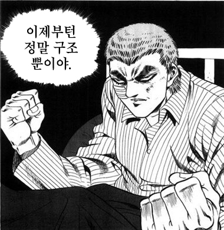 구조를 결심하자마자 전화로 룸메의 동의를 얻고, 고양이를 키우는 친구에게 이동장을 빌려왔다.왼손엔 고양이 마약간식 챠오 츄르를, 다른 손엔 이동장을 들고 고양이를 보러 갔다.고양이를 키우기만 해봤지 주워오는 건 한번도 안해 본 나는 고양이 까짓거 반항하면 그냥 휘리릭 들어서 케이지에 후루룩 넣고 가면 끝나는 거라고 생각했다.
아니 근데 애가 잘 안잡히는거다; 놀라서 인터넷에 찾아봤더니
네? 길고양이 포획은... 포획틀 없인 불가능 하다고요? ¹
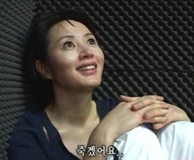
두시간 동안 이어진 구조 작업은 실패로 돌아가고…
지원군 세명을 더 부르고 두시간 동안 별 짓을 다했지만 실패하고, 결국 우리 넷은 쓰라린 마음을 안고 집으로 돌아갔다.
하지만 여기서 포기할 순 없는 노릇이었다. 태풍은 이미 한반도 남부에 상륙했고, 빠른 속도로 올라오고 있었다. 거세지는 바람에 고양이의 영역에 있는 나무들은 벌써부터 가지가 부러지기 시작했다. 걱정되는 마음에 룸메에게 마구 하소연을 했는데,
룸메: 경계심 때문에 그러는거면 그냥 나랑 새벽에 한번 나가보자. 고양이들은 야행성이잖아?

천재…?
태풍처럼 날아온 고양이, 링링
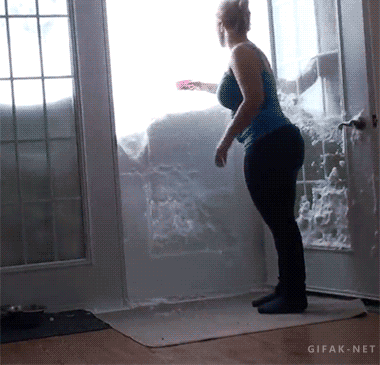애기야 맘마먹… 응?
태풍이 몰아치는 새벽 두시, 비바람을 뚫고 룸메와 함께 고양이를 찾으러 갔다. 걱정 반, 기대 반... 몇 번의 포획 실패가 경계심을 키웠는지, 아무리 찾아도 고양이는 보이지 않았다. 이대로 포기해야 할 것 같아 아쉬운 마음에 마지막으로 “애기야, 맘마먹자~!” 하고 불렀는데,
“야옹!!!!!”
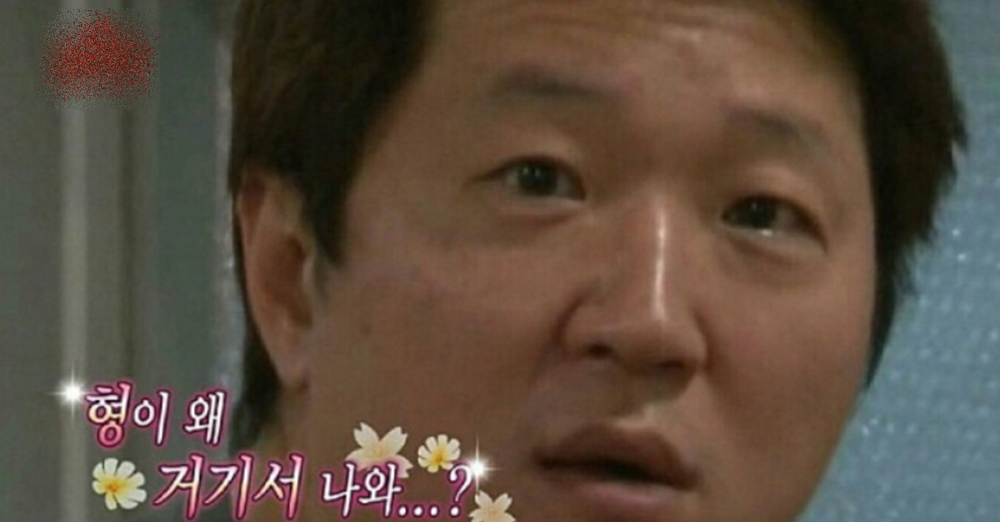
그 뒤로는 신기할 만큼 일이 잘 풀렸다.
룸메의 도움을 받아 밥먹는데 정신 팔린 고양이를 후다닥 케이지에 집어넣었다.² 태풍을 뚫고 집으로 돌아왔을 때가 새벽 네시쯤, 고양이는 케이지에 있을 땐 불안한 듯 계속 울었지만, 집에 도착하자 오히려 조용해졌다.

첫날, 집 안을 탐색하는 링링
박스를 구해 간이 화장실을 만들고, 고양이를 키우는 친구에게 부탁해서 사료를 얻어 온 나와 룸메는 거의 탈진 상태였다.
나: 야… 이제 어떡하지…?
룸메: 뭘 어떡하냐… 쟤 이름은 지었어?
나: 어차피 주인 찾아 줄거고 임시 이름인데 뭐.. 태풍 때문에 주워왔으니까 걍 링링이로 하자.
그리고 이 모든 것은 시작에 불과했다. (예?)
눈물없이는 볼 수 없는 구내염 투병기
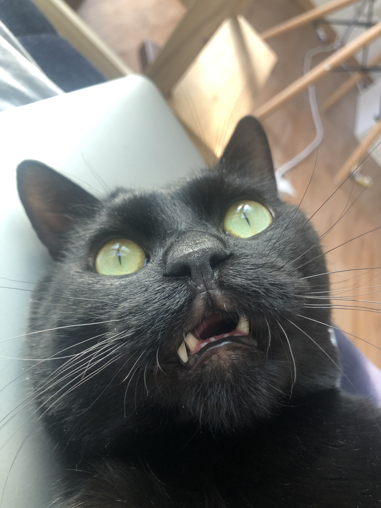내가 ㄱㅈ라니?!이빨도 뽑아야 한다니?!
한 달 뒤, 어느정도 살도 찌고 집안 생활에 적응도 한 것 같아 당분간 미뤄왔던 병원에 데려갔다. 길에서 산 지 오래된 것 같아 걱정했는데, 검진 결과가 양호해서 그 날 중성화 수술도 받기로 하고 근처 카페에 앉아 링링이의 주인을 찾는 글을 쓰고 있었다.
갑자기 병원에서 링링이의 상태가 좋지 않다는 연락이 왔다.
마취를 한 김에 구강 상태도 검진했는데, 구내염이 너무 심해서 동네 동물병원에서는 제대로 처치를 하지 못하는 수준이니까 서울에 있는 고양이 치과 전문 병원에 데려가 보라는 이야기였다. 구내염이 계속 진행된다면 음식을 먹지 못하고 그대로 지방간이 오거나 굶어서 죽을 수도 있으니 최대한 빠른 시일 안에 치료를 받아야 한다고 했다. 정확한 건 검진을 받아봐야 하지만 전체발치를 생각해야 한다고.
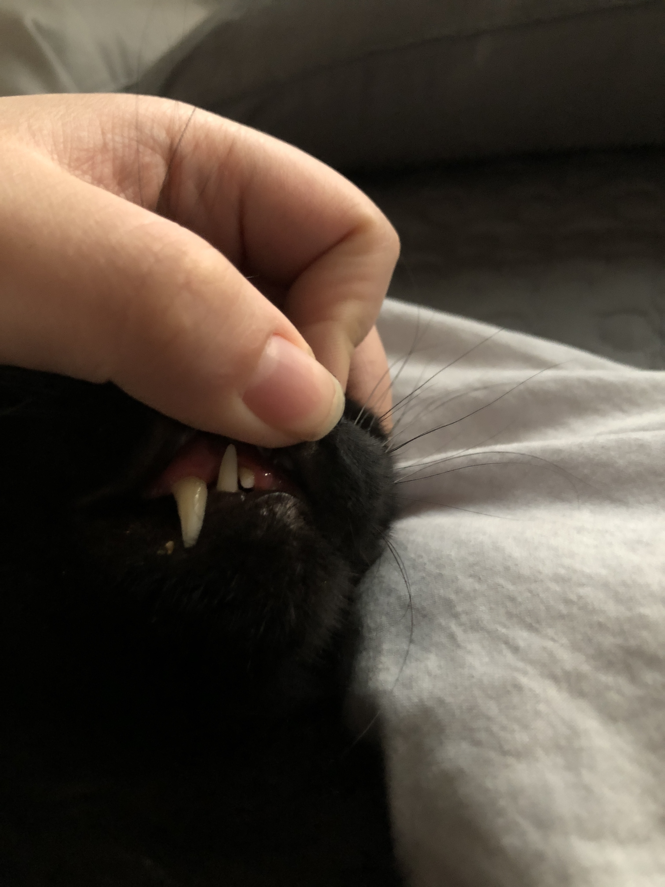 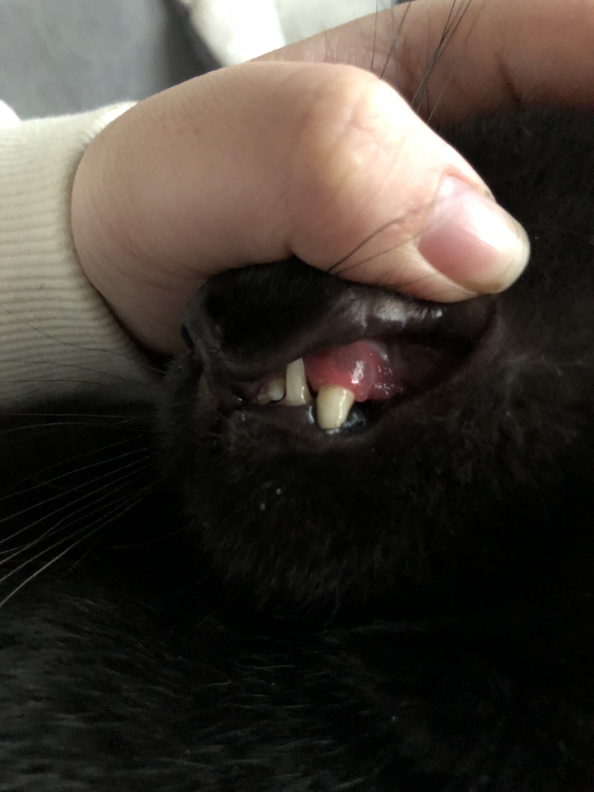육안으로 보기에도 심각한 상태…³
한살이 넘은, 더 이상 어리지도 작지도 마냥 귀엽지도 않고, 구내염에 걸려 치료비가 얼마가 들지 모르는 링링이를 데려갈 사람이 있을까?
아니, 데려간다고 해도 제대로 케어를 해주리라는 보장이 있을까? 그 순간 링링이와 평생 함께해야겠다는 결심이 섰다. 급하게 돈을 마련하고 실력 있다는 병원을 수소문해서 서울로 향했다. 상태가 많이 심각하고, 전체발치 수술 비용은 150만원인데 다른 검진이나 약값은 별도라고 했다. 이제 뭐 내가 가난하고 학생이고 어쩌고는 더이상 중요한게 아니었다.
돈은 어떻게든 할테니까 우리 애 좀 살려주세요ㅜㅜㅜㅜㅜ

병원비를 마련하기 위한 눈물의 알바쇼
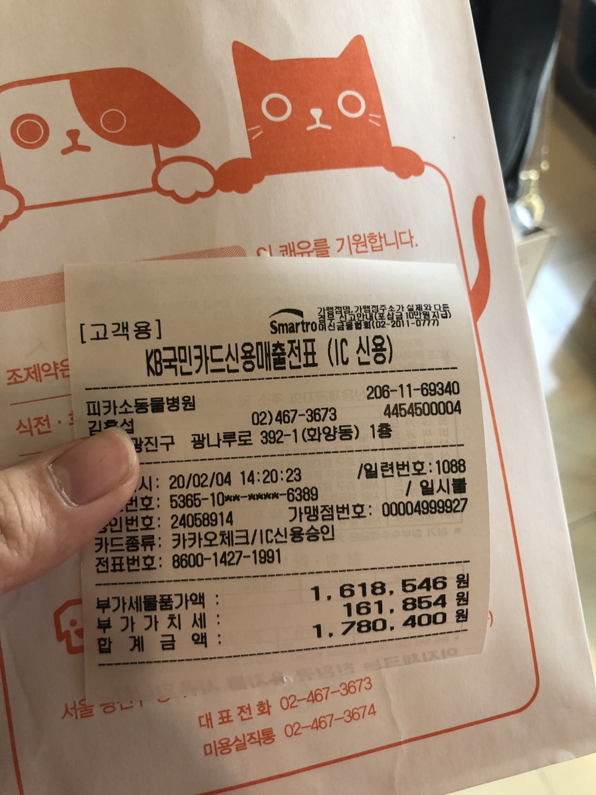 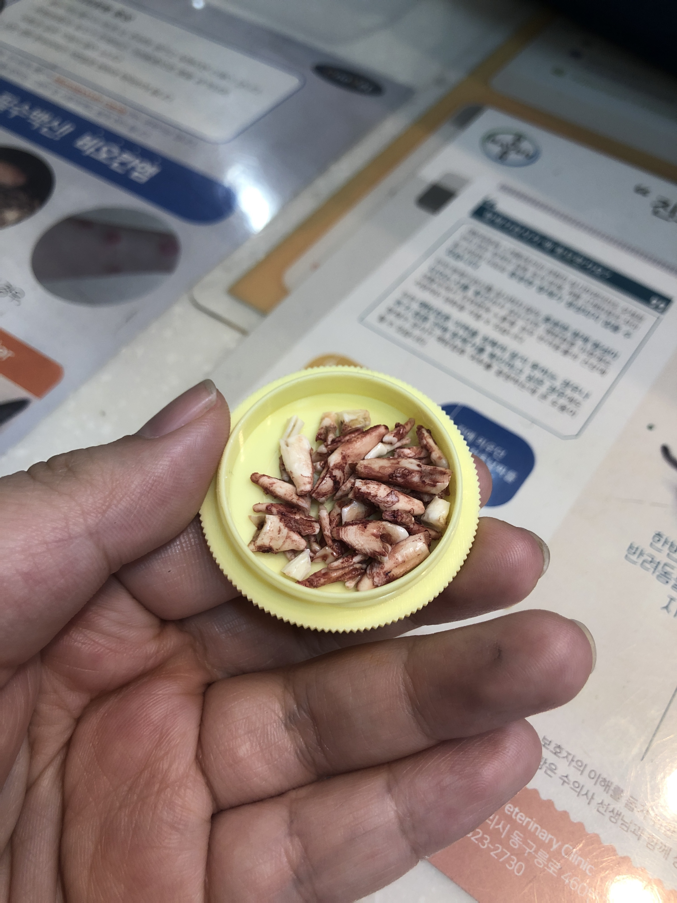링링이 병원비 극히 일부와 발치한 이. 진정한 투슬리스가 됐다
방학 내내 일한 알바비와 부모님께 지원받은 돈을 합해 200만원을 마련해서 링링이는 늦지 않게 무사히 수술을 받을 수 있었다.경과도 좋고 관리를 아주 잘해줬다고 칭찬을 늘어놓으시던 원장 선생님은 마지막 검진 날 나를 조용히 진료실로 부르셔서
어떻게 하면 3개월동안 고양이를 4kg이나 찌울 수가 있냐고 얘 7키로라고 처음 데려올 때 3키로였다는 거 거짓말 아니냐고 물어봤다……………………
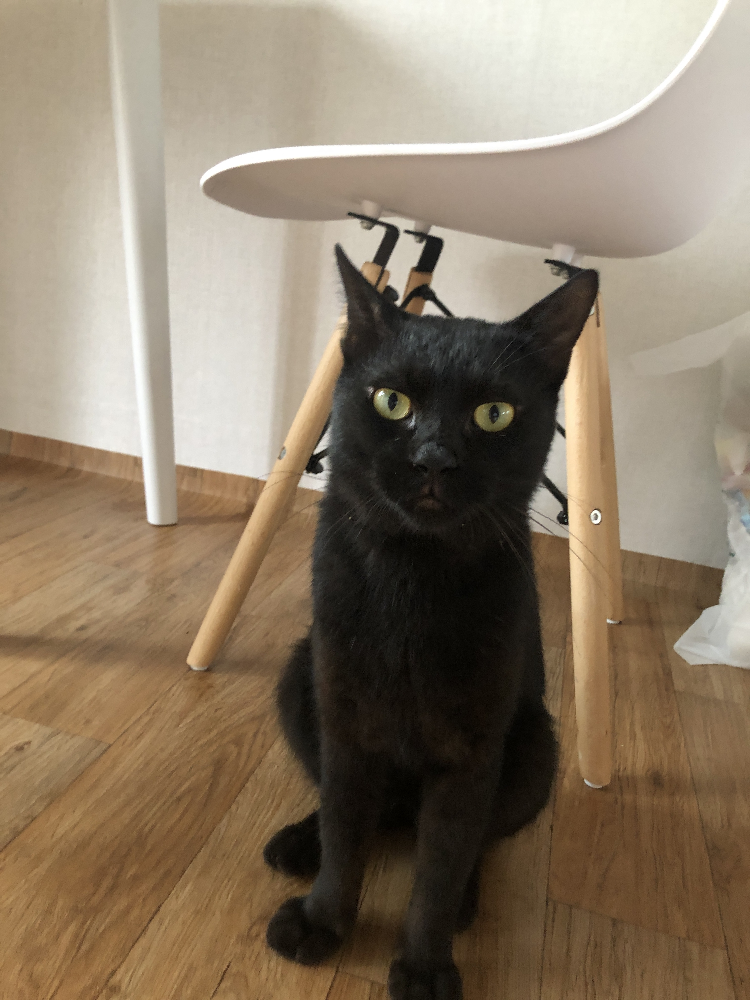 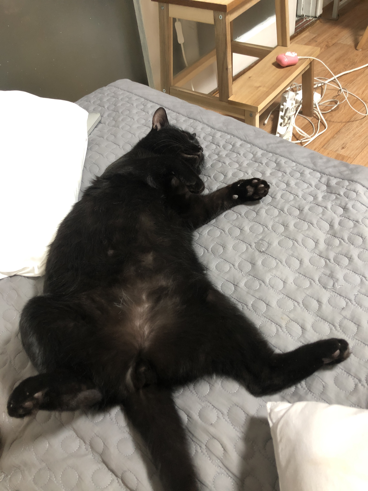동일 고양이 맞습니다.
너와 내가 가족이 되기까지
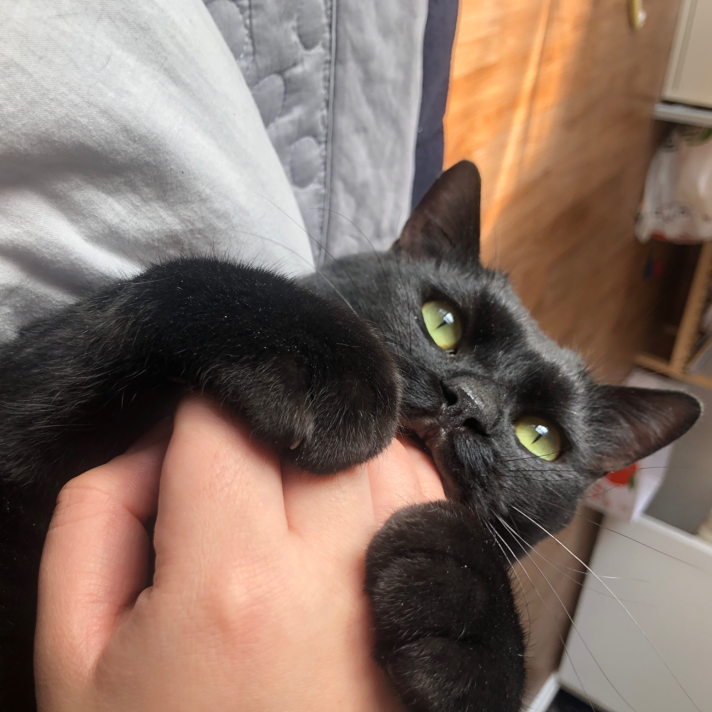내 점심은 1500원짜리 라면으로 때우고 하나에 4500원 하는 고양이 주식캔은 박스로 산다. 병원비가 무서워 웬만한 병은 참고 넘기지만 고양이 영양제는 하루 두번 꼬박꼬박 챙긴다. 나 먹는건 성분표가 붙어있는지 없는지 신경도 안쓰지만 링링이가 먹을건 해외논문을 뒤져가며 공부한다.
링링이는 꾸준히 병원에 정기 검진을 다녀야 하고, 신장질환도 평생 신경써야 한다. 친구들이랑 술약속이 잡혀도 링링이 밥시간이면 후다닥 돌아와야 하고, 하루에 두번은 꼭 화장실을 치워줘야 한다.
그 모든 번거로운 일들이 다 행복하다. 나날이 예뻐지고 사랑스러워지고 동글동글 반질반질해져가는 링링이를 볼 때마다 매일 더 깊이 사랑에 빠진다. 뭘 모르는 사람들은 고작 고양이 한마리에 왜 그리 열심이냐 하지만, 내가 너를 구했듯 너도 나를 구했다는 걸 우리 둘은 알고있다.
잠들기 전 침대맡에 자리를 잡은 링링이의 이마에 얼굴을 부비며 “사랑해, 사랑해, 사랑해. “ 세번 말한다. 링링이는 골골거리며 천천히 눈을 감았다 뜬다. 고양이는 애정을 모른다는 건 누가 한 말일까? 너는 이렇게 온 몸을 다해 나를 사랑하는데.
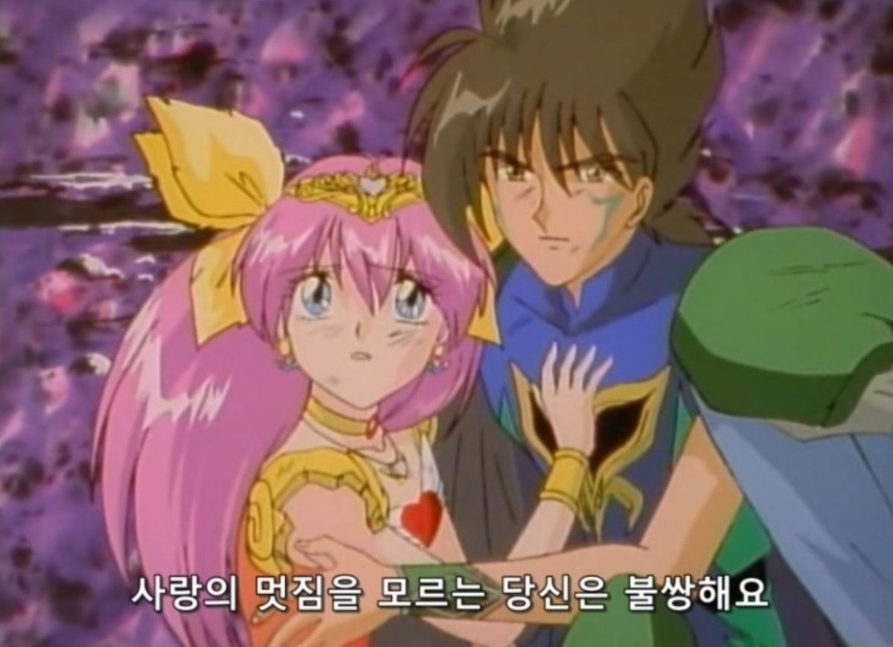사지말고 입양하세요!
길을 가다 골목길에서 냥아치에게 찍혔습니다. 고난과 시련을 이겨내고 사랑에 빠졌고, 가족이 되어 평생을 약속했어요. 평생 겪었던 사건들 중 가장 로맨틱한 이야기를 공유합니다.
🐱🐱🐱
🐱 ¹ 절대 이렇게 행동해선 안됩니다! 올바른 포획을 위해선: 당일 일어날 수 있는 모든 문제 상황 숙지 및 대비. 포획에 동참할 수 있는 다른 캣맘(길고양이에게 먹이를 주고 돌봐주는 사람) 을 찾아 협조 요청, 오랜 기간의 관찰, 최소한 포획 2주 전부터 정시에 사료 공급, 길냥이에게 우호적인 동물병원과 연결, 도구 (통덫 등) 사용, 날씨 등 다양한 것들을 고려해야 하고, 이 글의 경우는 매우 운이 좋은 희귀한 케이스임을 명시합니다.
🐱🐱 ² 링링이가 이상한 고양이임을 다시 한번 알립니다. 야생성이 살아있는 길고양이를 포획할 땐 다양한 상황을 고려하고 행동해야 하며 맨손으로 만졌다가 큰 부상을 입을 수 있습니다.
🐱🐱🐱 ³ 고양이가 위 사진처럼 잇몸이 붉어지고, 입에서 구취가 나며 밥을 먹을 때 머리를 흔든다면 구내염일 확률이 높으니 바로 병원으로 가봐야 합니다. 구내염이 심해진 고양이는 침을 흘리고 혀를 밖으로 내밀고 다닐 수 있습니다. 길에서 사는,혹은 살다 온 코숏에게서 구내염 환묘가 많습니다.